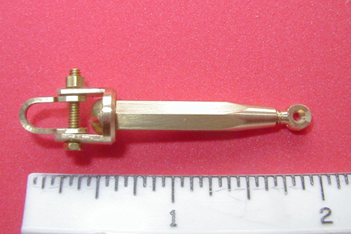

Pond boat turnbuckles are now supplied with a locking nut.
Top: MYF-TB-PB1
Bottom: MYF-TB-PB2
Model Yacht Fittings has turnbuckles for pond boats which are similar to the vintage "Fisher # 580" style.
These units may be used when the rigging is removed for transportation and the turnbuckle parts are fixed
and can not be lost. It is similar to turnbuckles used over the last number of decades by most pond boat modelers.
P/N: MYF-TB-PB1 has a take-up length which is approximately 5/8 inch . The shackle is
secured with 0-80 hex bolt hardware. The eye threading is 2-56. The turnbuckle body is machined from 5/32 hex stock.
P/N is MYF-TB-PB1 and is priced at $15.00 each.
P/N:MYF-TB-PB2
A new larger size pond boat turnbuckle using a 3/16 hex stock.
This item uses 4-40 threads with 3/4 of an inch travel on the eye, and a large shackle
held with a 2-56 hex bolt and nut.
P/N is MYF-TB-PB2 and is priced at $14.00 each.

MYF-PB-PB2
This new design, seen on vintage models is now available as P/N: MYF-TB-PB3.
It provides a quick connect capability and alot of adjustment.
The price is $14.00 each.
MYF-TB-PB3
MYF-TB-PB3 USED ON VINTAGE MARBLEHEAD
This new design, seen on vintage models is now available as P/N: MYF-TB-PB3.
It provides a quick connect capability and alot of adjustment.
The price is $14.00 each.
MYF-TB-PB3-J
The new MYF-TB-PB3-J turnbuckle is designed for "J" boats and other very large boats.
The eye threads are #8-32, and the hook material diameter is 1/8 inch.
Extended length turnbuckle
MYF-TB-PB2XL
This item is like the standard PB2 turnbuckle. The eye threading is #4-40 and the shackle uses a # 2-56 hex bolt, however the threaded length is 1 1/4" minimum. This allows for more adjustment, and less chance of becoming undone due to high vibration during sailing.
The cost for this item ( PN: MYF-TB-PB2-XL) is $16.50 each.
The added cost is due to more material and more complicitaed machining.
Roger Cousineau
rcousineau@msn.com
2346 Salmon Brook Lane,
The Villages, FL 32162
352-633-0578